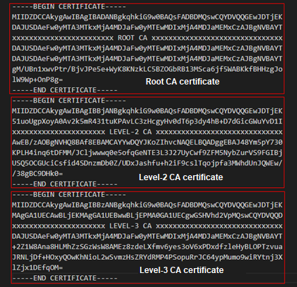

If the CA certificate is not a root CA certificate, the imported CA certificate must be a complete certificate chain file. This topic describes how to create a certificate chain file.
Prerequisites
You have obtained the CA certificates of all levels.
Procedure
Assume that the Google Chrome browser is used.
- Open Google Chrome, click
 , and choose Connection is secure.
, and choose Connection is secure. - Click Certificate is valid.
- In the displayed dialog box, click the Details tab.
- Select a certificate that is not at the last layer in Certificate Hierarchy and click Export.
- Create a text file, such as certificate.txt.
- Open the certificate files in sequence of root certificate, level-2 certificate, level-3 certificate, and so on. Then, copy the content (from "-----BEGIN CERTIFICATE-----" to "-----END CERTIFICATE-----") of the certificate files in sequence to the newly created text file.
The following figure uses a level-3 CA certificate as an example to show the content of a complete certificate chain file.

- Save the file and change the file name extension to pem.